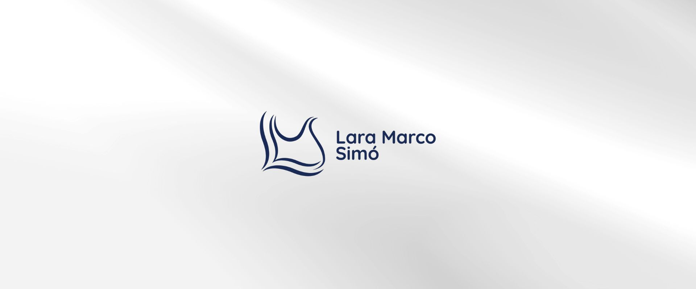
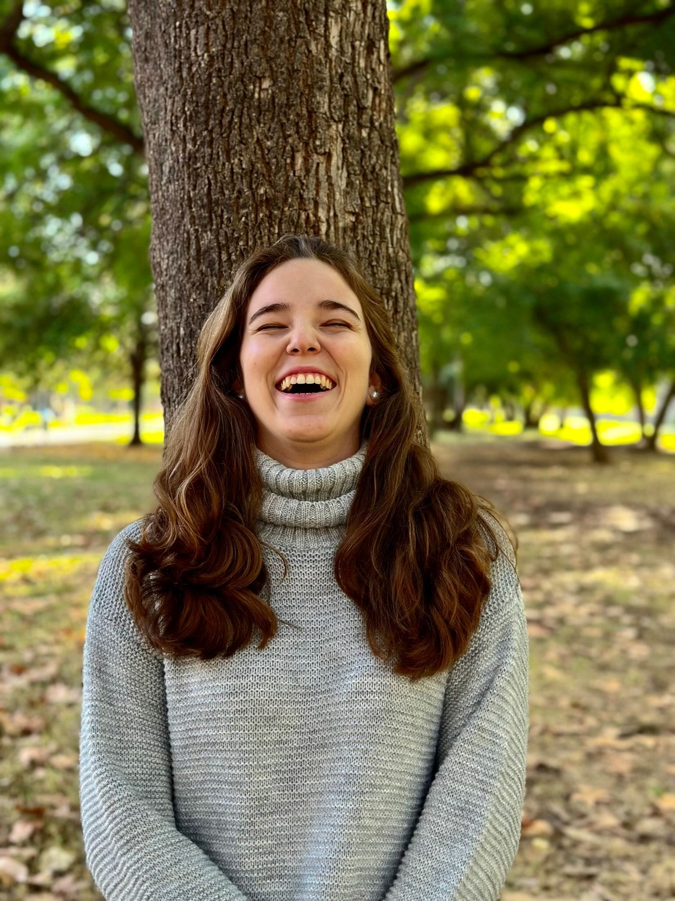
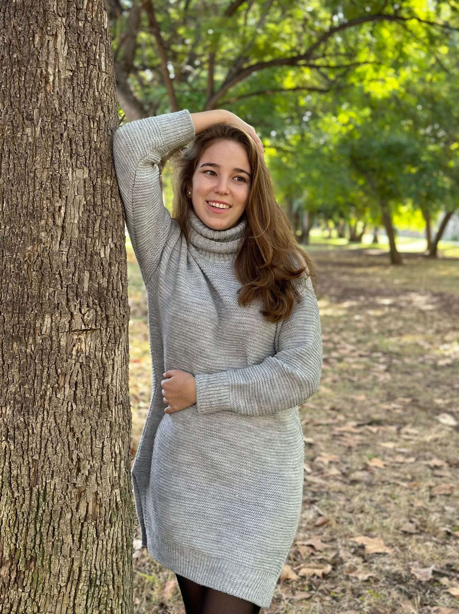
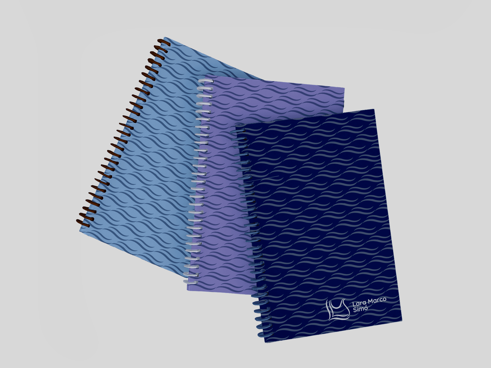
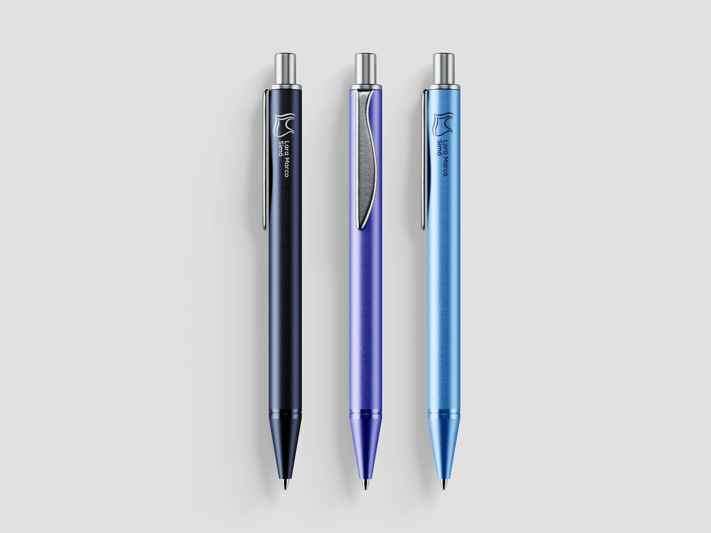
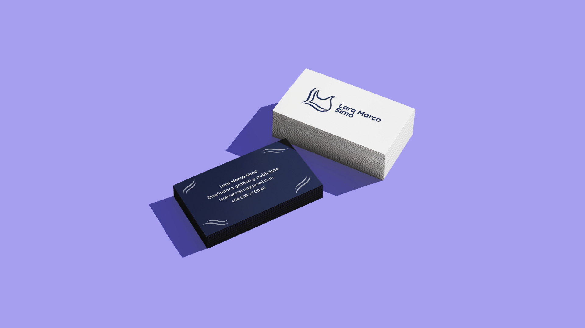
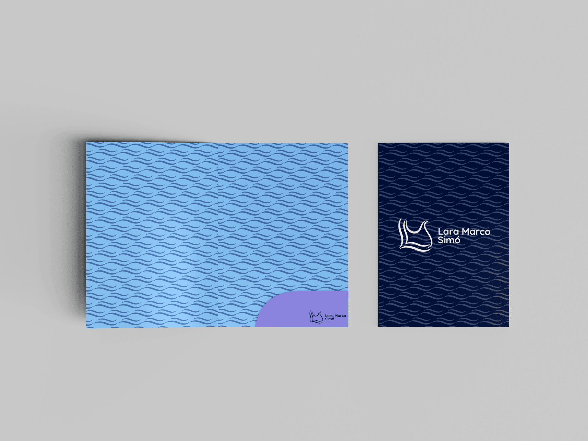
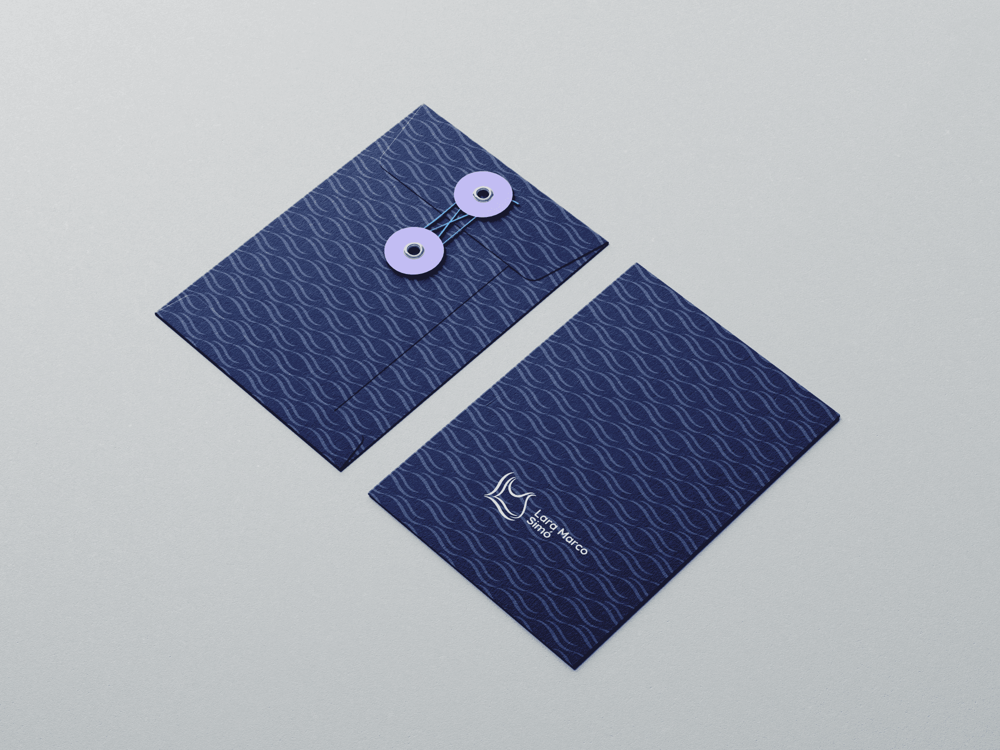

Mi identidad visual es el punto de encuentro entre quién soy y lo que hago. El logotipo nace de la fusión orgánica de mis iniciales (L, M y S), entrelazadas en un trazo que rinde homenaje a mis dos grandes pasiones: la profundidad de la lectura y la pasión por el diseño. Es un diseño que busca el equilibrio perfecto entre dinamismo y elegancia, donde cada línea fluye para representar una comunicación con propósito, alma y rigor técnico.
Quicksand
AaBbCcDdEeFf
GgHhIiJjKkLl
MmNnOoPpQqRr
SsTtUuVvWwXx
YyZz1234567890!@#$%*
A
a






